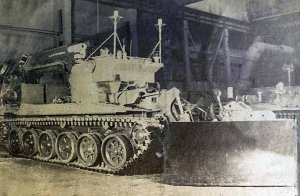
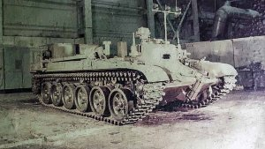
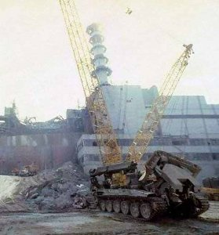
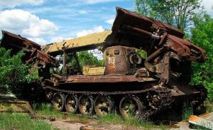

{kind=link}
История создания
Комплекс был создан в 1986 году, после аварии на Чернобыльской АЭС возникла острая необходимость создания автоматизированной техники для ликвидации последствий аварии и выполнения наземных задач. Разработкой комплекса занималось конструкторское бюро ВНИИ-100. Согласно срокам, комплекс должен был быть разработан за 2 месяца, однако разработка и изготовление составили всего 44 дня. Изготовлен производственным объединением «Новокраматорский машиностроительный завод» и ВНИИтрансмаш (п/я А-7701, Всесоюзный научно-исследовательский институт транспортного машиностроения) при участии 15 ЦНИИИ МО СССР, п/я В-2652 (Московский ордена Трудового Красного Знамени институт стали и сплавов) и НИКИМТа (п/я Р-6476, Научно-исследовательский и конструкторский институт монтажной технологии) Министерства средней промышленности. Всего изготовлен 1 комплекс. Основной задачей комплекса являлось сведение к минимуму присутствия людей в зоне с высоким уровнем радиоактивности. После выполнения всех работ, комплекс был похоронен в могильнике
Описание конструкции.
Объект 032
В качестве рабочей использовалась машина «Объект 032», созданная на базе инженерной машины разграждения ИМР-2. В отличие от базовой машины, «Объект 032» имел дополнительное оборудование для проведения дезактивации, а также систему дистанционного управления. Кроме того, сохранялась возможность «обитаемости» машины. Моторно-трансмиссионное отделение и ходовая часть модифицированы с целью повышения надёжности при работе в условиях воздействия ионизирующего излучения.
{kind=link}
Машина-робот занималась расчисткой завалов, вытягиванием техники, сбором радиоактивных обломков и отходов, а экипаж машины управления руководил всеми этими процессами из безопасного расстояния, находясь при этом в середине защищенной машины.
Рабочий робот был оборудован телекамерами, системами радиоуправления, грейфером, манипулятором и бульдозером. Наличие таких рабочих органов позволяло эффективно проводить работы по дезактивации (снятии верхнего, высокорадиоактивного слоя почвы возле ЧАЭС, валке мертвых деревьев, разбор завалов из строительных конструкций) и радиационной разведке.
Объект 033
Для управления безэкипажной машиной была изготовлена машина управления «Объект 033». За базу был взят основной танк Т-72А. В специальном отделении размещался экипаж машины, состоявший из механика-водителя и оператора, а также вся необходимая аппаратура наблюдения и управления машиной. Корпус машины был полностью герметизирован и отделан свинцовыми листами для усиления защиты от радиации. В центре машины были установлены агрегаты для запуска двигателя, а также прочее специализированное оборудование.
{kind=link}
Фото «Клин-1»

{kind=link}
{kind=link}